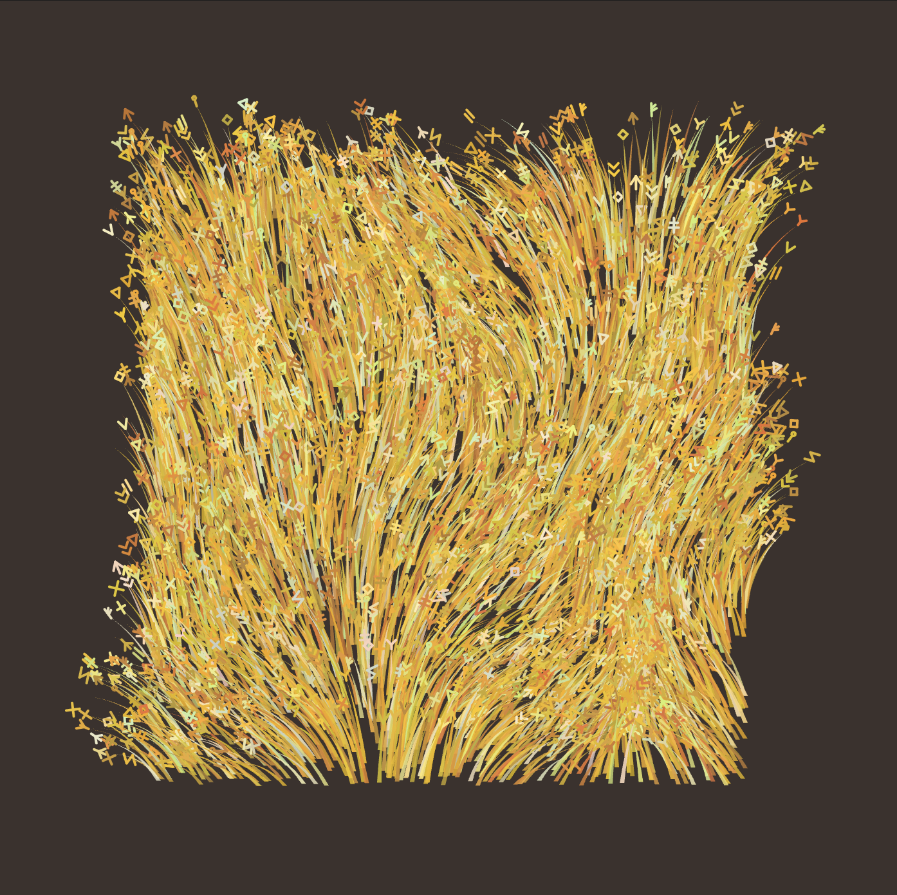
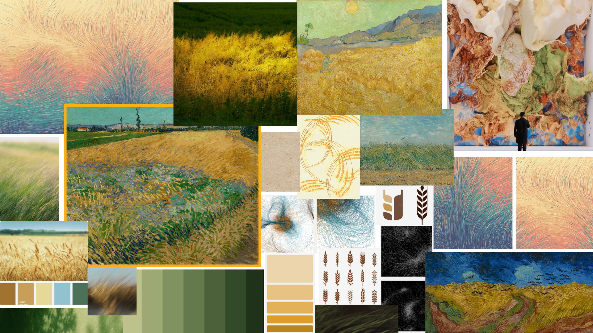
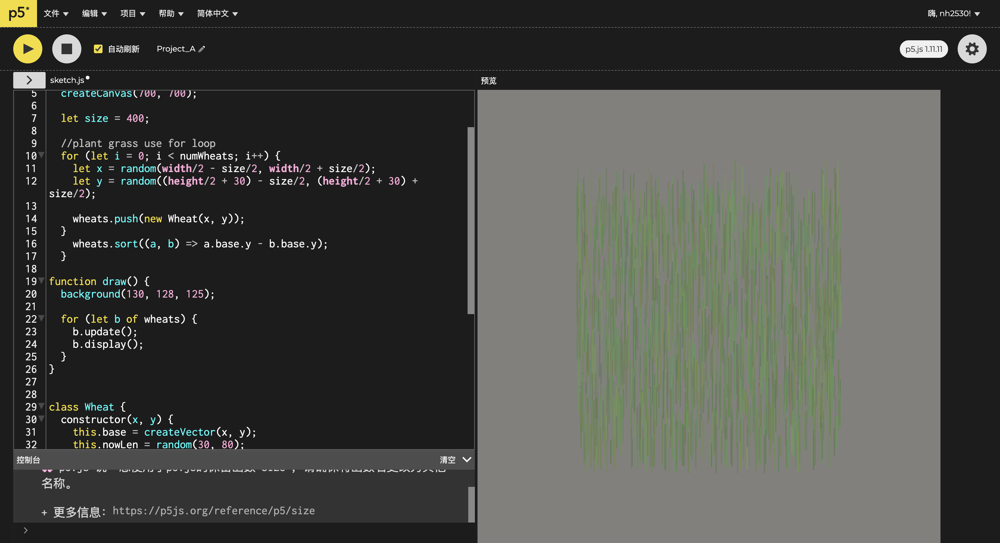
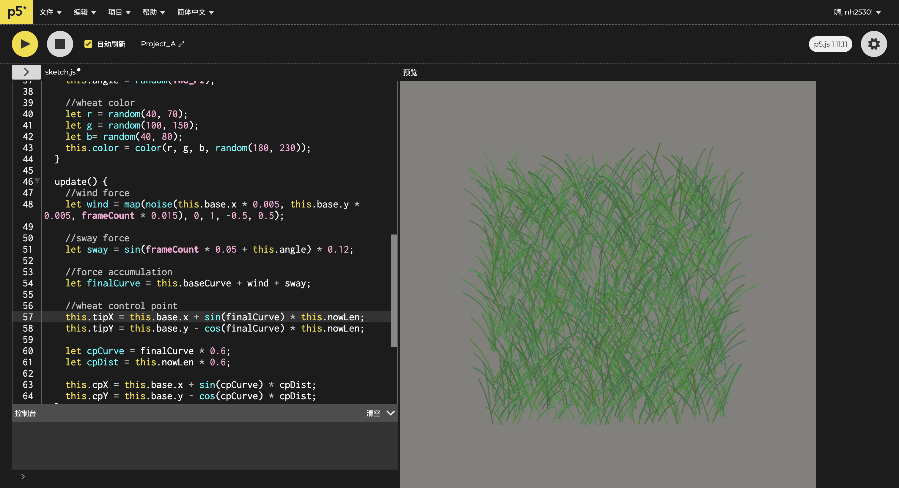
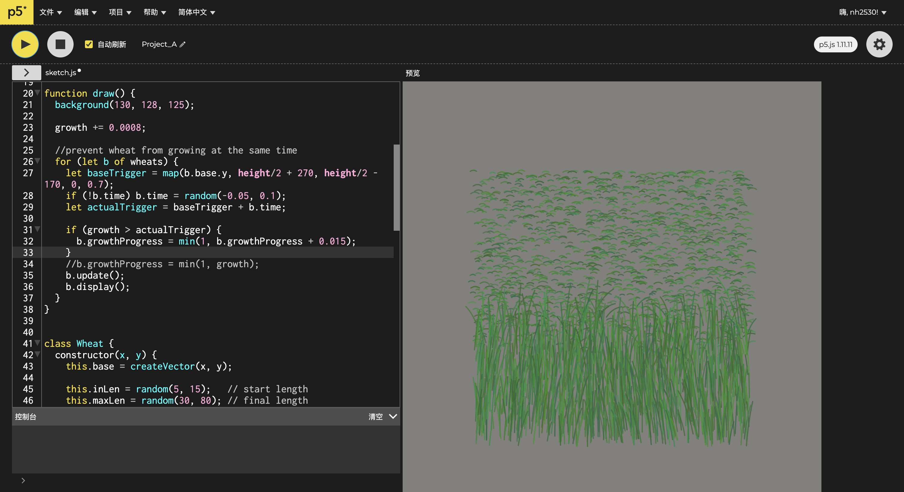
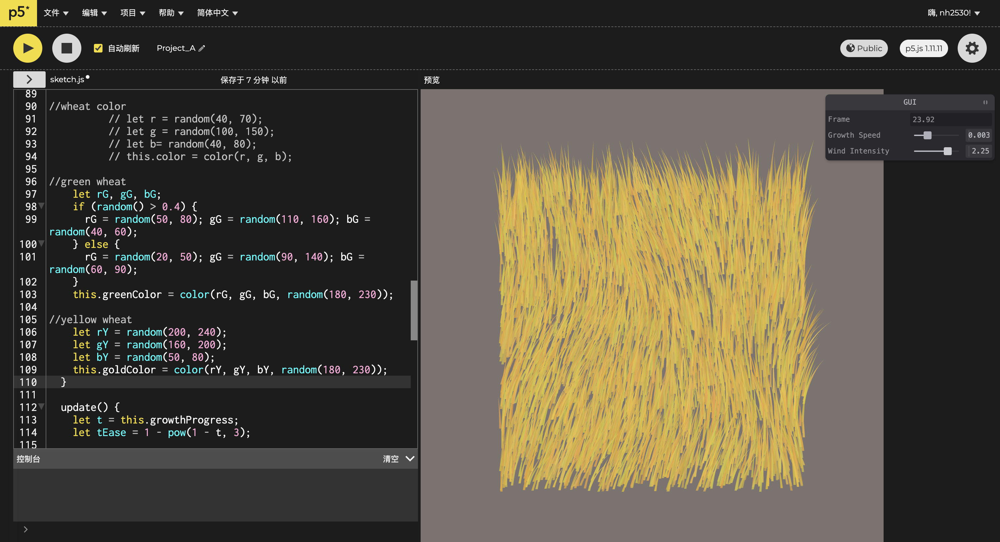
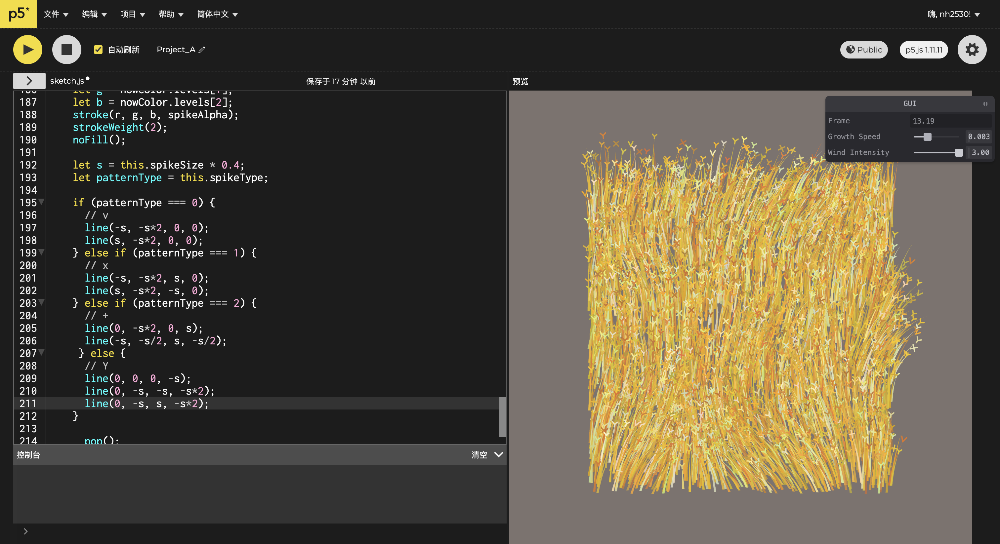
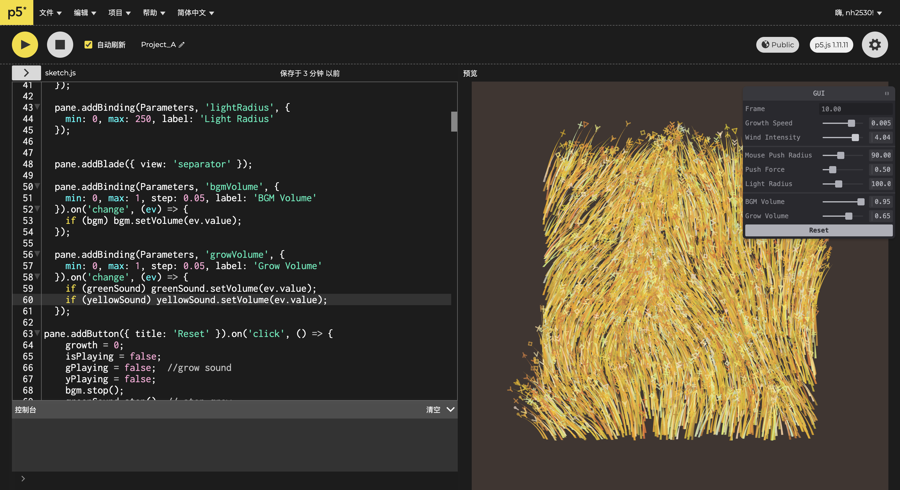
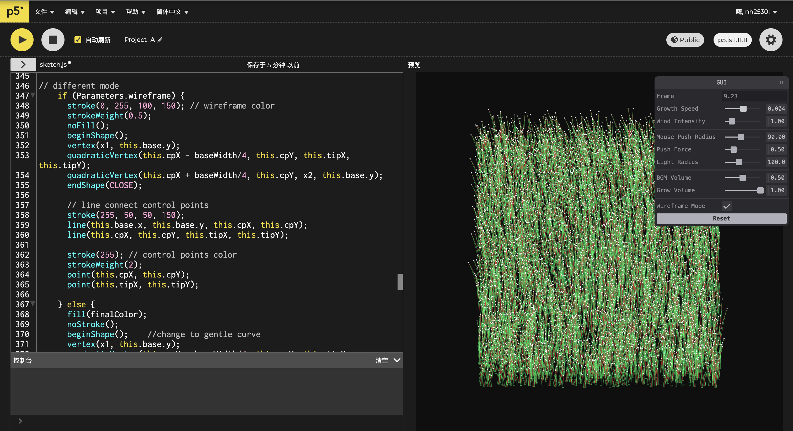
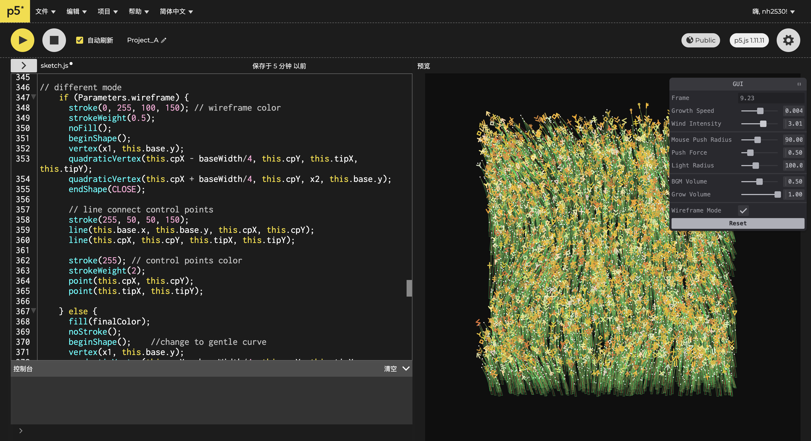

The Shape of the Wind
An interactive generative wheat field that makes invisible wind visible through motion, growth, light, and sound.
View Live Sketch →Role
Creative Coder / Visual Designer
Tools
p5.js, JavaScript, Tweakpane, REAPER
Course
Nature of Code Project
Focus
Simulation, motion, interaction, sound
Overview
The Shape of the Wind began with a simple question: how can an invisible natural force be visualized without drawing it directly? Instead of representing wind as lines or arrows, I used a field of wheat as evidence of its presence. Each blade grows, bends, sways, lights up, and responds to environmental forces, forming a living landscape shaped by code.
Challenge
The main challenge was to make a digital wheat field feel natural rather than mechanical. If every blade moved at the same rhythm, the landscape looked artificial. I needed to create a system where 1500 individual wheat blades could move together as a field while still keeping their own variation, rhythm, and visual identity.
Mind Map & Mood Board
I used a mind map and mood board to organize ideas around wind, growth, organic motion, and generative systems. These helped define both the conceptual direction and visual language of the project.


Design Process
01 — Building One Blade
I started by designing a single blade of wheat. Using object-oriented programming, I created a Wheat class so each blade could carry its own “DNA,” including height, color, position, growth speed, and motion phase. This helped the wheat feel less like repeated decoration and more like a living system.

02 — Scaling Into a Field
After building one blade, I expanded the system into 1500 wheat instances using an array. To avoid a flat copy-paste effect, I randomized height and color. I also sorted the blades by their y-position, so wheat in the foreground overlaps the wheat behind it, creating a stronger sense of depth.

03 — Creating Natural Motion
To make the field breathe, I used Perlin noise to create a wind field. Nearby blades respond in related ways, while each blade still has independent sway. This balance helped the field feel synchronized but not robotic, like a real landscape moving under shared environmental pressure.

04 — Growth Animation
I used lerp() to animate the wheat from small sprouts to full height. Instead of letting the whole field grow at once, I mapped each blade’s growth trigger to its screen position and added small random time offsets. This created a ripple-like growth pattern across the field.

05 — Visual Refinement
I moved from simple strokes to custom polygon shapes using beginShape(), giving each blade a wider base and a delicate tapered tip. I also developed a layered green color system with translucent alpha values, allowing overlapping blades to create a dense and atmospheric field.

06 — Performance Iteration
At one point, I tried using floating letters as wheat spikes, but the frame rate dropped dramatically. This became a technical reality check. I replaced the letter-based spikes with more efficient line-based geometric shapes, eventually expanding them into 15 visual variations.

07 — Interaction, GUI, and Audio
I added a Tweakpane GUI so users could adjust wind, growth, mouse force, light radius, and audio parameters in real time. The mouse also works like a flashlight: wherever it moves, nearby wheat receives a warm highlight. I created and edited the soundscape in REAPER, then connected it to the wind system so the audio could support the movement emotionally.

08 — Wireframe Mode
After the presentation, I added a wireframe mode as a “hacker view.” This mode reveals the red skeletal vectors behind the wheat field, showing the mathematical structure underneath the visual surface. It changed how I understood the project: the logic itself became part of the beauty.

Final Outcome
The final piece is an interactive generative wheat field where wind becomes visible through motion, growth, light, and sound. The project combines natural simulation with poetic visual design, showing how simple algorithmic rules can generate an organic and emotionally immersive environment.

Reflection
This project taught me that artistic vision has to work with technical limitations. My first idea of using floating letters for wheat spikes was visually interesting, but it completely slowed down the sketch. Replacing them with line-based geometry made the project more playable without weakening the concept.
I also realized that tools are part of the creative process. Adding the GUI changed the way I worked because I could test parameters instantly instead of refreshing the browser over and over. It made the project easier to iterate and helped me understand the relationship between code, motion, and visual feeling.
The audio system also changed the emotional quality of the piece. Once the rustling sound responded to the wind speed, the field felt less like a screen of pixels and more like a living environment. In the future, I would like to make the audio and visuals even more tightly connected, possibly using body movement or environmental input to control the wind.
3 Things That Are Effective
3 Things That Need Improvement / Clarity